MATH 1830
Unit 4: Integration
4.1 Area by Sums
Introduction
-
The rate of change of the population (in thousands of people per year) of North Dakota between 1985 and 1996 can be modeled by
$p(t)= \begin{cases} -7.35 & 0\leq t\leq 6 \\ 2.5 & 6 \lt t \leq 11\\ \end{cases} $ where t represents the number of years since 1985.
(Source: Statistical Abstract, 1998)
- Sketch a graph of the rate of change function.

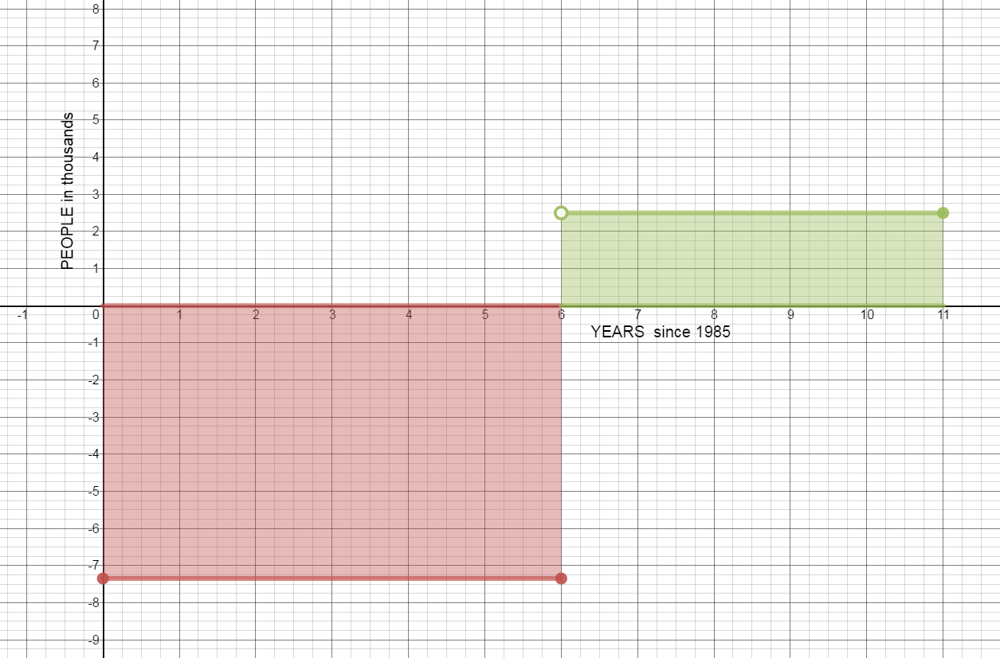
- Find the area of the region between the graph of p and the horizontal axis from 0 to 6. Interpret your answer.
$A=lw$
$A=7.35(6)$
$A=44.1$
There was a 44.1 thousand person decrease in population between 1985 and 1991.
- Find the area of the region between the graph of p and the horizontal axis from 6 to 11. Interpret your answer.
$A=lw$
$A=2.5(5)$
$A=12.5$
There was a 12.5 thousand person increase in population between 1991 and 1996.
- Was the population of North Dakota in 1996 greater or less than the population in 1985? By how much did the population change between 1985 and 1996?
$-44.1+12.5=-31.6$
In 1996 the population of North Dakota was 31.6 thousand people fewer than in 1985.
- What information would you need to determine the population of North Dakota in 1996?
We need to know the population of North Dakota in 1985. If we know the population count for 1985, we can calculate the population in 1996 by adding the population in 1985 to the change in population over the interval from 1985 to 1996.
- What is the relationship between the area of the regions and the population of North Dakota?
Each area represents the total change in population for the time period.
- Sketch a graph of the rate of change function.
-
An office worker assembles advertising portfolios. As fatigue sets in, the number of portfolios he can assemble per hour decreases. Using regression, it is determined that he can assemble $f\left( t \right) = 20 - {t^2}$ portfolios per hours $t$ hours after he begins work.
- How many portfolios can he assemble in the third hour?
$f(3) = 20 - {\left( 3 \right)^2} = 20 - 9 = 11$
The office worker assembles 11 portfolios in the third hour.
- Graph the equation on the interval [0,3] on the graph below and approximate the area under the curve using three left rectangles.
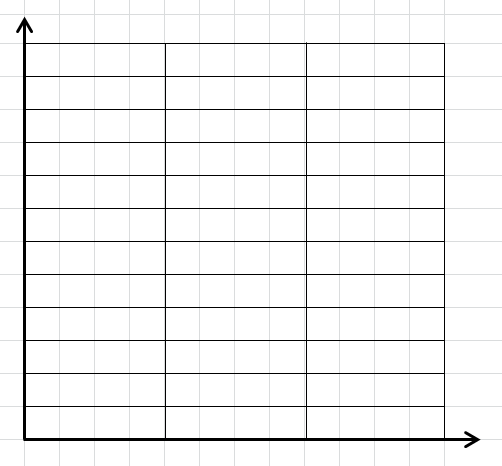
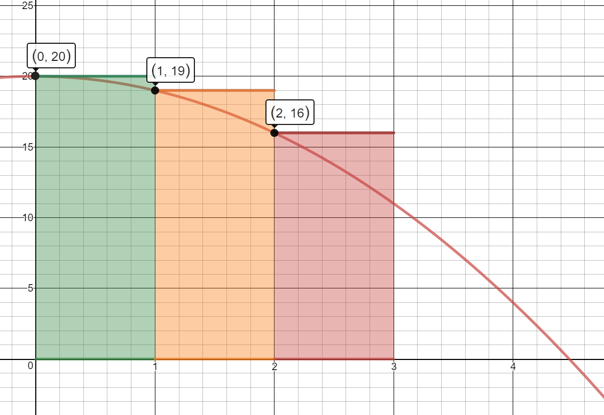
3 Left Rectangles (A = A1 + A2 + A3)
$A=1[f(0)] + 1[f(1)] + 1[f(2)]$
$A=1(20) + 1(19) + 1(16)$
$A=20+19+16$
$=55$ portfolios
The worker can assemble approximately 55 portfolios in 3 hours.
- Find the area under the curve using 6 left rectangles and then 9 left rectangles.
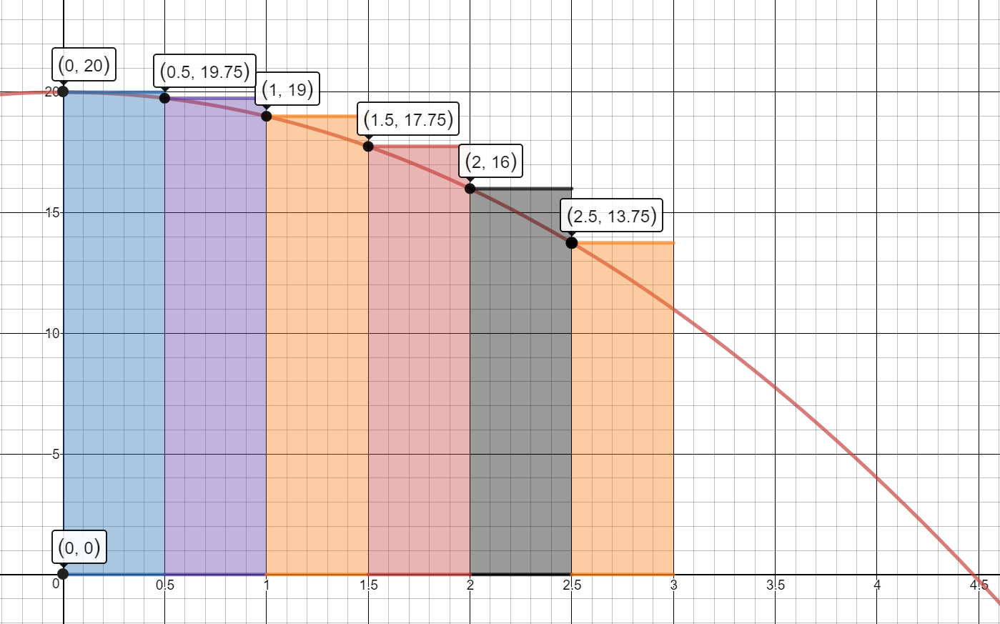
6 Left Rectangles (A = A1 + A2 + A3 + A4 + A5 + A6)
$A=.5[f(0)] + .5[f(.5)] + .5[f(1)] + .5[f(1.5)] + .5[f(2)] + .5[f(2.5)]$
$A=.5(20) + .5(19.75) + .5(19) + .5(17.75) + .5(16) + .5(13.75)$
$A=10 + 9.875 + 9.5 + 8.875 + 8 + 6.875$
$=53.125$ portfolios
The worker can assemble approximately 53.125 portfolios in 3 hours.
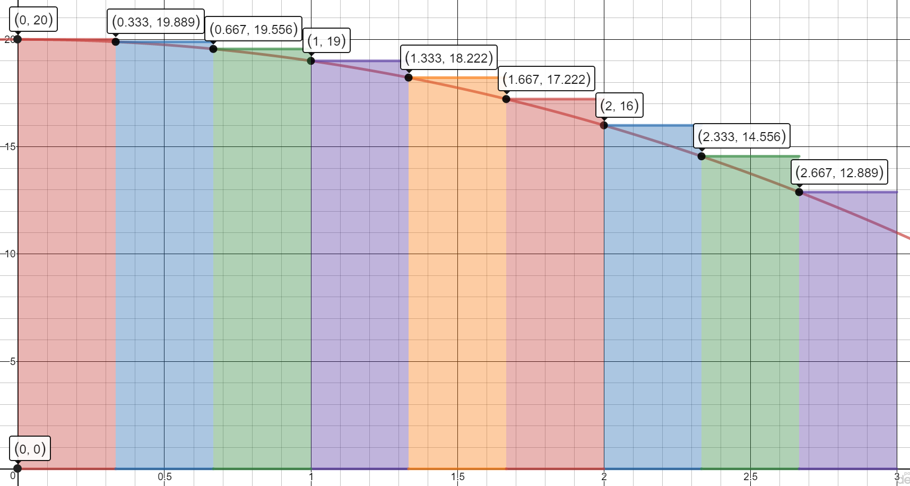
9 Left Rectangles (A = A1 + A2 + A3 + A4 + A5 + A6 + A7 + A8 + A9)
$A=\frac{1}{3}[f(0)] + \frac{1}{3}[f(\frac{1}{3})] + \frac{1}{3}[f(\frac{2}{3})] + \frac{1}{3}[f(1)] + \frac{1}{3}[f(\frac{4}{3})]+ \frac{1}{3}[f(\frac{5}{3})] + \frac{1}{3}[f(2)] + \frac{1}{3}[f(\frac{7}{3})] + \frac{1}{3}[f(\frac{8}{3})]$
$A=\frac{1}{3}(20) + \frac{1}{3}(19.889) + \frac{1}{3}(19.556) + \frac{1}{3}(19) + \frac{1}{3}(18.222)+ \frac{1}{3}(17.222) + \frac{1}{3}(16) + \frac{1}{3}(14.556) + \frac{1}{3}(12.889)$
$52.444$ portfolios
The worker can assemble approximately 52.444 portfolios in 3 hours.
- Do you think using 3 or 6 or 9 rectangles is a more accurate measure of the area? What could you do to get an even better measure?
Using 9 rectangles is the more accurate measure of the area. We would get even an even better measure of the area if we used more rectangles.
- What does the area under the curve represent?
The area under the curve represents the total number of portfolios the worker can assemble.
- How many portfolios can he assemble in the third hour?
Notes
-
Estimate the area under the curve $f(x) = {x^2}$ on the domain [0,4] by summing the areas of the four Right Hand Rectangles. Is your estimate greater than the actual area or less than the actual area?
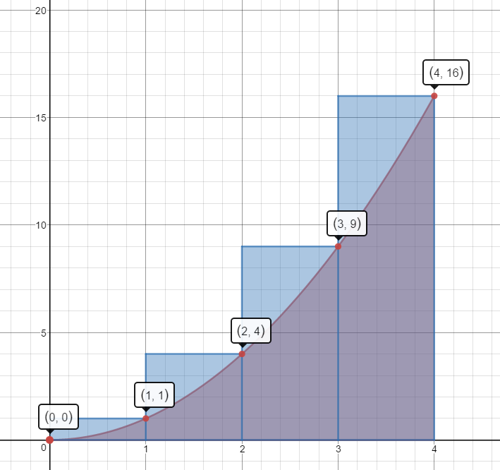
$1(1)+1(4)+1(9)+1(16)=1+4+9+16=30\;units^2$
This estimate is more than the actual area.
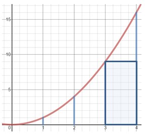
Left Hand Rectangles
$1(0)+1(1)+1(4)+1(9)=0+1+4+9=14\;units^2$ This estimate is less than the actual area.
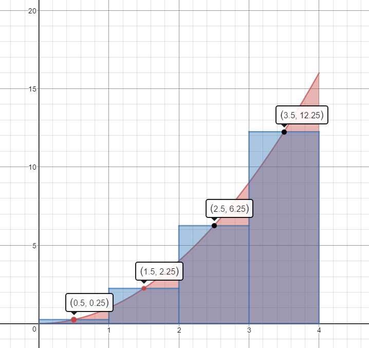Mid-Point Rectangles
$1(.25)+1(2.25)+1(6.25)+1(12.25)=.25+2.25+6.25+12.25=21\;units^2$
This estimate is slightly less than the actual area.
-
Use 3 Right Hand Rectangles to estimate the area under the curve $f(x) = 2x$ on the domain [1,4].
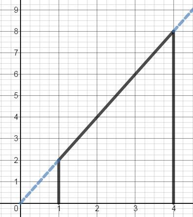$1(4)+1(6)+1(8)$
$4+6+8$
$18\;units^2$
Is this estimate less than the actual area or greater than the actual area?
This estimate is more than the actual area.
-
Use 3 Mid-Point Rectangles to estimate the area under the curve $f(x) = {x^3}$ on the domain [1,4].
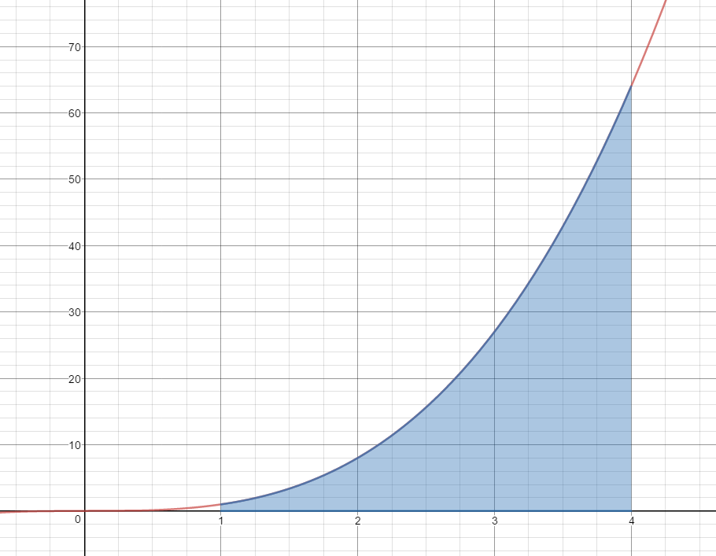$1{(1.5)^3} + 1{(2.5)^3} + 1{(3.5)^3}$
$3.375 + 15.625 + 42.875$
$61.875\;units^2$
Is this estimate less than the actual area or greater than the actual area?
This estimate is less than the actual area.
-
Use 3 Left Hand Rectangles to estimate the area under the curve $f(x) = \frac{1}{x}$ on the domain [0.5, 2.0].
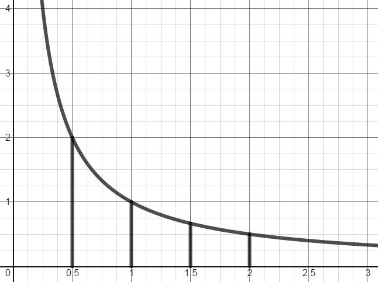$\frac{1}{2}\left( {\frac{1}{{.5}}} \right) + \frac{1}{2}\left( {\frac{1}{1}} \right) + \frac{1}{2}\left( {\frac{1}{{1.5}}} \right)$
$\frac{1}{2}(2) + \frac{1}{2}(1) + \frac{1}{2}\left( {\frac{2}{3}} \right)$
$1 + \frac{1}{2} + \frac{1}{3}$
$1.83\;units^2$
Is this estimate less than the actual area or greater than the actual area?
This estimate is greater than the actual area.
4.2 Fundamental Theorem of Calculus
Introduction
From 4.1 homework problem #2:
Given the function $f(x)=4-0.16{{x}^{2}}$
Approximate the area under the curve on the interval [0, 6] using 6 right rectangles.
Notes
Antiderivatives
General Antiderivative Formulas
$\begin{align}&\int E'\left[I(x)\right]I'(x)\;dx\end{align}=E\left[I(x)\right]+C$
$\begin{align}&\int\left[f(x)\right]^nf(x)\;dx\end{align}=\frac{\left[f(x)\right]^{n+1}}{n+1}+C\;\;\;n\neq-1$
$\begin{align}&\int e^{f(x)}\cdot f'(x)\;dx\end{align}=e^{f(x)}+C$
$\begin{align}&\int{\frac{1}{f\left( x \right)}~{f}'\left( x \right)~dx~}\end{align}=~\ln \left[ f\left( x \right) \right]+C$
$\begin{align}&\int u^n\;du\end{align}\;=\;\frac{u^{n+1}}{n+1}+C\;\;n\neq-1$
$\begin{align}&\int e^u\;du\end{align}\;=\;e^u+C$
$\begin{align}&\int\frac1u\;du\end{align}\;=\;\ln\left|u\right|+C$
The Fundamental Theorem of Calculus
The Fundamental Theorem of Calculus
Let $f$ be continuous on [a, b]. If $F$ is any antiderivative for $f$ on [a,b], then $$\begin{align}&\int_a^bf\left(x\right)\operatorname dx\end{align}\;=F(b)-F(a)$$Evaluate the Definite Integral: Compare your answer to the area you calculated in 4.1 notes.
-
$S(x)=\begin{align}&\int_0^4x^2dx\end{align}$
$ = (\frac{{{x^3}}}{3} + C)│_0^4$
$=[\frac{{{4^3}}}{3} + C] - [\frac{{{0^3}}}{3} + C]$
$=21.33 + C - 0 - C$
$21.33$
-
$S(x) =\begin{align}&\int_1^4 {2xdx}\end{align}$
$=(\frac{{2{x^2}}}{2} + C)│_1^4$
$= ({x^2} + C)|_1^4$
$=({4^2} + C) - ({1^2} + C)]$
$=16 + C - 1 - C$
$=15$
-
$S(x) = \begin{align}&\int_1^4 {{x^3}} dx\end{align}$
$=( \frac{{{x^4}}}{4} + C)│_1^4$
$=(\frac{{{4^4}}}{4} + C) - (\frac{{{1^4}}}{4} + C)$
$=64 + C - \frac{1}{4} - C$
$=63.75$
-
$S(x) = \begin{align}&\int_{0.5}^2 {\frac{1}{x}} \,dx\end{align} $
$=(ln \left| x \right| + C)│_{0.5}^2$
$= (\ln (2) + C) - (\ln (0.5) + C)$
$= \ln (2) + C - \ln (0.5) - C$
$= \ln (2) - \ln (0.5)$
$=\ln (\frac{2}{{0.5}}) = \ln (4)$
$\approx1.39$
-
$\begin{align}&\int_0^7 8x\;dx\end{align} $
$= \frac{{8{x^2}}}{2}│_0^7$
$= 4{x^2}│_0^7$
$(4{\left( 7 \right)^2} + C) - (4{\left( 0 \right)^2} + C)$
$= 196 + C - 0 - C$
$= 196$
-
$\begin{align}&\int_2^3 4{x^3}\;dx\end{align}$
$= (\frac{{4{x^4}}}{4} + C)│_2^3$
$= {x^4} + C│_2^3$
$= ({3^4} + C) - ({2^4} + C)$
$= 81 + C - 16 - C$
$= 65$
-
$\begin{align}&\int_0^3 5{e^x}\;dx\end{align}$
$= 5{e^x}│_0^3$
$= (5{e^3} + C) - (5{e^0} + C)$
$= 5{e^3} + C - 5(1) - C$
$= 5{e^3} - 5$
$= 5({e^3} - 1)$
$ \approx 95.43$
-
$\begin{align}&\int_1^{4\;} \frac{7}{x}\;dx\end{align}$
$= (7\ln| x|)│_1^4$
$= 7(\ln 4 + C) - 7(\ln 1 + C)$
$= 7\ln 4 + C - 7\ln 1 - C$
$= 7\ln 4 - 7\ln 1$
$\approx 9.70$
-
$\begin{align}&\int_3^7 \;\left( {2 - 4{x^2}} \right)\;dx\end{align}$
$= (2x - \frac{{4{x^3}}}{3} + C)│_3^7$
$= [2(7) - \frac{{4{{\left( 7 \right)}^3}}}{3} + C] - [2(3) - \frac{{4{{\left( 3 \right)}^3}}}{3} + C]$
$= (14 - 457.33 + C) - (6 - 36 + C)$
$= - 443.33 + 30$
$= - 413.33$
-
$\begin{align}&\int_4^{25} \frac{5}{{\sqrt x }}\;dx\end{align}$
$=\begin{align}&\int_{4}^{25}{5{{x}^{-1/2}}dx}\end{align}$
$= \left(\frac{{5{x^{1/2}}}}{({1/2})} + C \right)│_4^{25}$
$= (10{x^{1/2}})|_4^{25}$
$= 10\sqrt {25} + C - (10\sqrt 4 + C)$
$= 10(5) - 10(2)$
$= 50 - 20$
$= 30$
-
Cost: A company manufactures mountaineering 75-liter backpacks. The research department produced the marginal cost function $$B'\left( x \right) = 400 - \;\frac{x}{5}\quad\quad 0\; \le x\; \le 1000$$ Where $B’(x)$ is in dollars and x is the number of backpacks produced per week. Compute the increase in cost when production level increases from 0 backpacks per week to 600 backpacks per week. Set up a definite integral and evaluate it.
$B=\begin{align}&\int_0^{600} {400 - \frac{x}{5}dx}\end{align}$
$B= (400x - \frac{{{x^2}}}{{5 \cdot 2}} + C)│_0^{600}$
$B=[400(600) - \frac{{{{600}^2}}}{{10}} + C] - [400(0) - \frac{{{0^2}}}{{10}} + C]$
$B= 240,000 - 36,000 + C - 0 - C$
$B= \$ 204,000$
The cost increased by \$204,000 when production increased from 0 to 600 backpacks per week.
-
Costs of Upkeep of a Marina: Maintenance costs for a marina generally increase as the structures at the marina age. The rate of increase in maintenance costs (in dollars per year) for a particular marina is given approximately by $$M'\left( x \right) = 30{x^2} + 2000$$ where x is the age of marina, in years, and M(x) is the total accumulated costs of maintenance for x years. Write a definite integral that gives the total maintenance costs from the third through the seventh year, and evaluate the integral.
$M=\begin{align}&\int_3^7 {30{x^2} + 2000 dx}\end{align}$
$M=(\frac{{30{x^3}}}{3} + 2000x + C)│_3^7$
$M= 10{x^3} + 2000x + C│_3^7$
$M= [10{\left( 7 \right)^3} + 2000(7) + C] - [10{\left( 3 \right)^3} + 2000(3) + C]$
$M= 3430 + 14000 + C - 270 - 6000 - C$
$M = \$ 11,160$
The total maintenance costs for the marina for years three through seven will be $\$11,160.$
4.3 Indefinite Integrals
Introduction
The marginal cost of producing x units of a commodity is given by $$C'\left( x \right) = 3{x^2} + 2x.$$
-
Find the cost function $C\left( x \right)$ for this commodity.
$C(x) = \begin{align}&\int {C'(x)dx}\end{align}$
$C(x) = \begin{align}&\int {\left(3x^{2}+2x\right)dx}\end{align}$
$C(x) = \frac{3x^{3}}{3}+\frac{2x^{2}}{2}+K$
$C(x) = {x^3} + {x^2} + K$
-
If the fixed costs are \$2000, find the cost of producing 20 units.
If fixed costs are $\$2000$, $ \quad C(0)=2000$
$C(x)={x^3} + {x^2} + K$
$2000 = {0^3} + {0^2} + K$
$K=2000$
$C(x) = {x^3} + {x^2} + 2000$
$C(20) = {20^3} + {20^2} + 2000$
$C(20) = 8000 + 400 + 2000$
$C(20) = 10,400$
The cost of producing 20 units is $10,400.
Notes
Integrals
General Integral Formulas
$\begin{align}&\int E'\left[I(x)\right]I'(x)\;dx\end{align}=E\left[I(x)\right]+C$
$\begin{align}&\int\left[f(x)\right]^nf(x)\;dx\end{align}=\frac{\left[f(x)\right]^{n+1}}{n+1}+C\;\;\;n\neq-1$
$\begin{align}&\int e^{f(x)}\cdot f'(x)\;dx\end{align}=e^{f(x)}+C$
$\begin{align}&\int{\frac{1}{f\left( x \right)}~{f}'\left( x \right)~dx~}\end{align}=~\ln \left[ f\left( x \right) \right]+C$
$\begin{align}&\int u^n\;du\end{align}\;=\;\frac{u^{n+1}}{n+1}+C\;\;n\neq-1$
$\begin{align}&\int e^u\;du\end{align}\;=\;e^u+C$
$\begin{align}&\int\frac1u\;du\end{align}\;=\;\ln\left|u\right|+C$
Find the indefinite integral. Check by differentiating.
-
$\begin{align}&\int {10\;dx}\end{align}$
$=10x + C$
-
$\begin{align}&\int {15{x^2}\;\;dx}\end{align} $
$=\frac{{15{x^3}}}{3} + C$
$=5{x^3} + C$
-
$\begin{align}&\int {{x^{ - 4}}\;\;dx}\end{align} $
$=\frac{{{x^{ - 3}}}}{{ - 3}} + C$
$=-\frac{{ {x^{ - 3}}}}{3} + C$
$=-\frac{1}{3x^{3}}+C$
-
$\begin{align}&\int {8\;{x^{1/3}}\;\;\;dx}\end{align}$
$= \frac{{8{x^{4/3}}}}{({4/3})} + C$
$= \frac{3}{4}(8{x^{4/3}}) + C$
$= 6{x^{4/3}} + C$
-
$\begin{align}&\int {{x^2}\;\left( {1 + {x^3}} \right)\;dx}\end{align}$
$\begin{align}&\int {\left({x^2} + {x^5}\right)dx}\end{align}$
$= \frac{{{x^3}}}{3} + \frac{{{x^6}}}{6} + C$
-
$\begin{align}&\int {\left( {4{x^3} + \frac{2}{{{x^3}}}} \right)\;dx}\end{align}$
$\begin{align}&\int {4{x^3} + 2{x^{ - 3}}dx}\end{align}$
$= \frac{{4{x^4}}}{4} + \frac{{2{x^{ - 2}}}}{{ - 2}} + C$
$= {x^4} - {x^{ - 2}} + C$
$= {x^4} - \frac{1}{{{x^2}}} + C$
-
$\begin{align}&\int {\frac{{1 - x{e^x}}}{x}dx}\end{align}$
$\begin{align}&\int {\left(\frac{1}{x} - {e^x}\right)dx}\end{align}$
$= \ln \left| x \right| - {e^x} + C$
Find the particular antiderivative of each derivative that satisfies the given condition.
-
$R'\left( x \right) = 600 - 0.6x \quad$ when $R\left( 0 \right) = 0$
$R(x)=\begin{align}&\int {(600 - 0.6x)} dx\end{align}$
$R(x) = 600x - \frac{{0.6{x^2}}}{2} + C$
$R(x) = 600x - 0.3{x^2} + C$
$600(0) - 0.3({0^2}) + C = 0$
$0 - 0 + C = 0$
$C = 0$
$R(x) = 600x - 0.3{x^2}$
-
$\frac{{dQ}}{{dt}}\; = \;\;\frac{{100}}{{{t^2}}} \quad$ when $Q\left( 1 \right) = 400$
$\frac{{dQ}}{{dt}}=100{t^{ - 2}}$
$Q(t)=\begin{align}&\int {100{t^{ - 2}}} dt\end{align}$
$Q(t) = \frac{{100{t^{ - 1}}}}{{ - 1}} + C$
$Q(t) = \frac{{ - 100}}{t} + C$
$\frac{{ - 100}}{1} + C = 400$
$ - 100 + C = 400$
$C = 500$
$Q(t) = \frac{{ - 100}}{t} + 500$
-
$\frac{{dy}}{{dt}} = 5{e^t} - 4 \quad$ when $y(0)=- 1$
$y=\begin{align}&\int {\left(5{e^t} - 4\right)dt}\end{align}$
$y = 5{e^t} - 4t + C$
$5{e^0} - 4(0) + C = - 1$
$5(1) - 0 + C = - 1$
$5 - 0 + C = - 1$
$5 + C = - 1$
$C = - 6$
$y = 5{e^t} - 4t - 6$
-
Renewable Energy: According to the Energy Research Institute, in 2012, US consumption of renewable energy was $8.45$ quadrillion Btu (or $8.45 \times 10^{15}$ Btu). Since the 1960’s, consumption has been growing at a rate (in quadrillion Btu per year) given by $$f'(t) = 0.004t + 0.062$$ where t is in years after 1960. Find $f(t)$ and estimate US consumption of renewable energy in 2024.
$f(t) = \begin{align}&\int {f'(t)dt}\end{align}$
$f(t) = \begin{align}&\int {\left(0.004t+0.062\right)dt}\end{align}$
$f(t) = \frac{{0.004{t^2}}}{2} + 0.062t + C$
$f(t) = 0.002{t^2} + 0.062t + C$
In 2012, $t=52$ and consumption was 8.45 quadrillion Btu.
$0.002{\left( {52} \right)^2} + 0.062(52) + C = 8.45$
$5.408 + 3.224 + C = 8.45$
$8.632 + C = 8.45$
$C = - 0.182$
$f(t) = 0.002{t^2} + 0.062t - 0.182$
$f(64) = 0.002{\left( {64} \right)^2} + 0.062(64) - 0.182$
$f(64) = 8.192 + 3.968 - 0.182$
$f(64) = 11.978$
The estimated US consumption of renewable energy in 2024 will be 11.978 quadrillion BTU.
-
Sales Analysis: The rate of change of the monthly sales of a newly released video game is given by $$S'(t) = 400{t^{1/3}}$$ $$S(0) = 0$$ where t is the number of months since the game was released and $S(t)$ is the number of games sold each month (in thousands). Find $S(t)$. When will monthly sales reach 20,000,000 games?
$S(t)=\begin{align}&\int400t^{1/3}\;dt\end{align}$
$S(t) = \frac{{400{t^{4/3}}}}{{4/3}} + C$
$S(t) = \frac{3}{4}(400t^{4/3}) + C$
$S(t) = 300{t^{4/3}} + C$
$300{\left( 0 \right)^{4/3}} + C = 0$
$C = 0$
$S(t) = 300{t^{4/3}}$
$300{t^{4/3}} = 20000$
${t^{4/3}} = \frac{{200}}{3}$
${\left( {{t^{4/3}}} \right)^{3/4}}= {\left( {\frac{{200}}{3}} \right)^{3/4}}$
$t = 23.33$
The monthly sales will reach 20,000,000 games after 23.33 months
-
Efficiency of a Machine Operator: The rate at which a machine operator’s efficiency Q (in percent) changes with respect to time on the floor without a break is modeled by the function $$\frac{{dQ}}{{dt}} = 0.3t - 7\quad \quad 0 \le t \le 16\,\,hrs$$ where t is the number of house the operator has been working. Find $Q(t)$ given that the operator’s efficiency after working 2 hours is 82%.
$Q(t)=\begin{align}&\int {\left(0.3t - 7 \right)dt}\end{align}$
$Q(t) = \frac{{0.3{t^2}}}{2} - 7t + C$
$Q(t) = 0.15{t^2} - 7t + C$
$Q(2) = 0.15{\left( 2 \right)^2} - 7(2) + C = 82$
$- 13.4 + C = 82$
$C = 95.4$
$Q(t) = 0.15{t^2} - 7t + 95.4$
Find the operators efficiency after 4 hours. After 8 hours.
$Q(4) = 0.15{\left( 4 \right)^2} - 7(4) + 95.4 = 69.8\%$
$Q(8) = 0.15{\left( 8 \right)^2} - 7(8) + 95.4 = 49\%$
The operator efficiency after 4 hours is 69.8%.
The operator efficiency after 8 hours is 49%.
4.4 Integration by Substitution
Introduction
Find the derivative.
-
$f(x)=\left(3x^5+5x\right)^4$
$f'(x)=4\left(3x^5+5x\right)^3\left(15x^4+5\right)$
$f'(x)=\left(60x^4+20\right)\left(3x^5+5x\right)^3$
-
$f(x)=\sqrt[5]{\left(3x^2+7\right)^4}$
$f(x)=\left(3x^2+7\right)^{4/5}$
$f'(x)=\frac45\left(3x^2+7\right)^{-1/5}\cdot\left(6x\right)$
$f'(x)=\frac{24x}{5\sqrt[5]{\left(3x^2+7\right)}}$
-
$y=\ln\left(3x^2+5x\right)$
$y'=\frac1{3x^2+5x}\cdot\left(6x+5\right)$
$y'=\frac{6x+5}{3x^2+5x}$
-
$f(x)=e^{5x^3-6x+1}$
$y'=e^{5x^3-6x+1}\left(15x^2-6\right)$
Notes
General Indefinite Integral Formulas
Antiderivatives
General Antiderivative Formulas
$\begin{align}&\int E'\left[I(x)\right]I'(x)\;dx\end{align}=E\left[I(x)\right]+C$
$\begin{align}&\int\left[f(x)\right]^nf(x)\;dx\end{align}=\frac{\left[f(x)\right]^{n+1}}{n+1}+C\;\;\;n\neq-1$
$\begin{align}&\int e^{f(x)}\cdot f'(x)\;dx\end{align}=e^{f(x)}+C$
$\begin{align}&\int{\frac{1}{f\left( x \right)}~{f}'\left( x \right)~dx~}\end{align}=~\ln \left[ f\left( x \right) \right]+C$
$\begin{align}&\int u^n\;du\end{align}\;=\;\frac{u^{n+1}}{n+1}+C\;\;n\neq-1$
$\begin{align}&\int e^u\;du\end{align}\;=\;e^u+C$
$\begin{align}&\int\frac1u\;du\end{align}\;=\;\ln\left|u\right|+C$
Find each indefinite integral and check the result by differentiating.
-
$\begin{align}&\int {{{\left( {{x^9}\; + 1} \right)}^4}\;\left( {9{x^8}} \right)dx}\end{align}$
$u = {x^9} + 1$
$du = 9{x^8}\;dx$
$\begin{align}&\int {{u^4}\;du}\end{align}$
=$\frac{u^5}{5} + C$
$=\frac{( {{x^9} + 1})^5}{5} + C$
-
$\begin{align}&\int {{{\left( {6{x^3} - 7} \right)}^{ - 6}}\;\left( {18{x^2}} \right)\;dx}\end{align}$
$u = 6{x^3} - 7$
$du = 18{x^2}\;dx$
$\begin{align}&\int {{u^{ - 6}}} du\end{align}$
$\frac{u^{ - 5}}{ - 5} + C$
$\frac{{{\left( 6{{x}^{3}}-7 \right)}^{-5}}}{-5}+C$
-
$\begin{align}&\int {\frac{2}{{9x - 4}}\;\left( 9 \right)\;dx}\end{align}$
$u = 9x - 4$
$du = 9\;dx$
$\begin{align}&\int {\frac{2}{u}\;du}\end{align}$
$2\ln|u| + C$
$2\ln| {9x - 4}| + C$
-
$\begin{align}&\int {{{\left( {3t + 5} \right)}^4}\;dt}\end{align}$
$u = 3t + 5$
$du = 3\;dt$
$\frac{1}{3}\begin{align}&\int {{{\left( {3t + 5} \right)}^4}3dt}\end{align}$
$\frac{1}{3}\begin{align}&\int {{u^4}} du\end{align}$
$\frac{1}{3}\frac{{{u^5}}}{5} + C$
$\frac{1}{15}\left(3t+5\right)^5+C$
-
$\begin{align}&\int {{e^{ - 2x}}\;dx}\end{align}$
$u = - 2x$
$du = - 2\;dx$
$ - \frac{1}{2}\begin{align}&\int {{e^{ - 2x}}( - 2)dx}\end{align}$
$- \frac{1}{2}\begin{align}&\int {{e^u}du}\end{align}$
$- \frac{1}{2}{e^u} + C$
$ - \frac{1}{2}{e^{ - 2x}} + C$
-
$\begin{align}&\int {\frac{x}{{5 + {x^2}}}\;dx}\end{align}$
$u = 5 + {x^2}$
$du = 2x\;dx$
$\frac{1}{2}\begin{align}&\int {\frac{1}{{5 + {x^2}}}} 2xdx\end{align}$
$\frac{1}{2}\int {\frac{1}{u}} du$
$\frac{1}{2}\ln \left| u \right| + C$
$\frac{1}{2}\ln| {5 + {x^2}}| + C$
-
$\begin{align}&\int {\frac{{{t^2}}}{{{{\left( {{t^3}\; - 1} \right)}^4}}}\;dt}\end{align} $
$u = {t^3} - 1$
$du = 3{t^2}\;dt$
$\begin{align}&\int {\frac{1}{{{{\left( {{t^3} - 1} \right)}^4}}}{t^2}} dt\end{align}$
$\frac{1}{3}\begin{align}&\int {\frac{1}{{{{\left( {{t^3} - 1} \right)}^4}}}} 3{t^2}dt\end{align}$
$\frac{1}{3}\begin{align}&\int {\frac{1}{{{u^4}}}} du\end{align}$
$\frac{1}{3}\begin{align}&\int {{u^{ - 4}}} du\end{align}$
$\frac{1}{3}\frac{{{u^{ - 3}}}}{{ - 3}} + C$
$ - \frac{1}{{9{{\left( {{t^3} - 1} \right)}^3}}} + C$
-
$\begin{align}&\int {\frac{{x\; - 1}}{{{x^2}\; - 2x + 5}}\;dx}\end{align}$
$u = {x^2} - 2x + 5$
$du = (2x - 2)dx$
$du = 2(x - 1)\;dx$
$\begin{align}&\int {\frac{1}{{{x^2} - 2x + 5}}} (x - 1)dx\end{align}$
$\frac{1}{2}\begin{align}&\int {\frac{1}{{{x^2} - 2x + 5}}} 2(x - 1)dx\end{align}$
$\frac{1}{2}\begin{align}&\int {\frac{1}{u}} du\end{align}$
$\frac{1}{2}\ln \left| u \right| + C$
$\frac{1}{2}\ln \left| {{x^2} - 2x + 5} \right| + C$
-
$\begin{align}&\int {\frac{1}{{x\ln x}}\;\;dx}\end{align}$
$u = \ln x$
$du = \frac{1}{x}\;dx$
$\begin{align}&\int {\frac{1}{{\ln x}}} \cdot \frac{1}{x}dx\end{align}$
$\begin{align}&\int {\frac{1}{{\u}}} du\end{align}$
$\ln \left| u \right| + C$
$\ln \left| {\ln x} \right| + C$
-
$\begin{align}&\int {\frac{x}{{\sqrt {x + 3} }}\;dx}\end{align}$
there is an extra x in the problems 10 and 11
$u = x + 3$
$x = u - 3$
$du = dx$
$\begin{align}&\int {\frac{{u - 3}}{{\sqrt u }}} du\end{align}$
$\begin{align}&\int\left(u-3\right)u^{1/2}\;du\end{align}$
$\begin{align}&\int{\left({{u}^{1/2}}-3{{u}^{1/2}}\right)du}\end{align}$
$\frac{{{u}^{3/2}}}{3/2}-\frac{3{{u}^{1/2}}}{1/2}+C$
$\frac{2}{3}{{u}^{3/2}}-6{{u}^{1/2}}+C$
$\frac{2}{3}{{\left( x+3 \right)}^{3/2}}-6{{\left( x+3 \right)}^{1/2}}+C$
-
$\begin{align}&\int {x{{\left( {x + 2} \right)}^5}\;dx}\end{align}$
$u = x + 2$
$x = u - 2$
$du = dx$
$\begin{align}&\int {(u - 2){u^5}du}\end{align}$
$\begin{align}&\int {\left({u^6} - 2{u^5}\right)} du\end{align}$
$\frac{{{u^7}}}{7} - \frac{{2{u^6}}}{6} + C$
$\frac{{{{\left( {x + 2} \right)}^7}}}{7} - \frac{{{{\left( {x + 2} \right)}^6}}}{3} + C$
-
Continuous Money Flow: Suppose money is flowing continuously into a savings account at a rate of \$1000 per year at interest rate of 2%, compounded continuously. The amount that is paid over time, dt, is $$A'(t)=1000e^{.02t}.$$ What is the accumulation of the amount over the first 5 years?
$A=\begin{align}&\int_0^5 {1000{e^{0.02t}}\;dt}\end{align}$
$u = 0.02t$
$du = 0.02\;dt$
$A=1000\frac{1}{{0.02}}\begin{align}&\int_0^5 {{e^{0.02t}}0.02\;dt}\end{align}$
$A=50000\begin{align}&\int_0^5 {{e^u}\;du}\end{align}$
$A=(50000{e^u}+C)│{_{t=0}^{t=5}}$
$A=(50000{e^{0.02t}}+C)\left| {_0^5} \right.$
$A=50000({e^{0.02(5)}} - {e^{0.02(0)}})$
$A=5258.55$
The accumulation in the savings account over the first 5 years is approximately $\$5258.55.$
4.5 Area between Curves
Introduction
Before 1995, the U. S. Census Bureau used the model below to project the number (in thousands) of households in the United States, where $t$ is the number of years after 1990. $${N_1} = 1.35{t^2} + 1078.4t + 92,323\quad$$ For the years 1995-2005, the actual number of households $N$ in the United States can be modeled by $${N_2} = 18.32{t^2} + 1178.3t + 92,099$$
-
Graph ${N_1}$ on the interval $\;5 \le t \le 15$ and shade the area under the curve. What does this shaded area represent?
This shaded area represents the projected number of households in the United States from 1995 to 2005.


-
Now graph ${N_2}$ on the interval $\;5 \le t \le 15$ on the same graph and shade the area under the curve. What does this shaded area represent?
This shaded area represents the actual number of households in the United States from 1995 to 2005.
-
Did the projection model over-project or under-project the number of households?
The projection model under-projected the number of households.
-
How would you determine the difference in the number of households given by each model?
Subtract the bottom equation from the top.
-
Find the difference in the number of households for the two models.
$\begin{align}&\int_{5}^{15}{\left((18.32{{x}^{2}}+1178.3x+92,099)-(1.35{{x}^{2}}+1078.4x+92,323)\right)\;dx}\end{align}$
$=26,134.17$
The difference between the two models is 26,134 households.
Notes
Area Between Curves
Area Between Curves
If $f$ and $g$ are continuous and $f\left( x \right)\; > \;g\left( x \right)$ over the interval $\left[ {a,b} \right]$, then the area bounded by $y\; = \;f\left( x \right)$ and $y\; = \;g\left( x \right)$for $a\; \le x \le b$ is given exactly by $$A =\begin{align}&\int\limits_a^b \left[ {f\left( x \right) - g\left( x \right)} \right]\;dx\end{align}$$
Area Bounded by an Interval
Find the area bounded by the graphs of the indicated equations over the given interval. Compute answers to three decimal places.
-
$y_1 = \; - x + 7$ and $y_2 = 0$ on the interval $ - 3 \le x \le 3$

$Area=\begin{align}&\int_{-3}^{3}{\left(y_1-y_2 \right) dx}\end{align}$
$=\begin{align}&\int_{-3}^{3}{\left((-x+7)-0 \right) dx}\end{align}$
$=\left(-\frac{{{x}^{2}}}{2}+7x+C\right)│ _{-3}^{3} $
$=(-\frac{9}{2}+21+C)-(-\frac{9}{2}-21+C)$
$=-\frac{9}{2}+21+C+\frac{9}{2}+21-C$
$=42\ unit{{s}^{2}}$
-
$y_1 = \; - \frac{1}{4}{x^3} + 2 \quad$ and $\quad y_2 = 0 \quad$ on the interval $ - 2 \le x \le 1$

$Area=\begin{align}&\int_{-2}^{1}{\left(y_1-y_2 \right) dx}\end{align}$
$=\begin{align}&\int_{-2}^{1}{\left(\left(-\frac{1}{4}{{x}^{3}}+2\right)-0 \right) dx}\end{align}$
$=\left(-\frac{1}{4}\left(\frac{{{x}^{4}}}{4}\right)+2x+C \right)\left)│ _{-2}^{1} \right.$
$=(-\frac{{{x}^{4}}}{16}+2x+C\left)│ _{-2}^{1} \right.$
$=(-\frac{1}{16}+2+C)-(-\frac{16}{16}-4+C)$
$=-\frac{1}{16}+2+1+4$
$=6.9375\ unit{{s}^{2}}$
-
$y_1 = \;x\left( {4 + x} \right)\quad $ and $\quad y_2 = 0 \quad$ on the interval $\; - 3 \le x \le - 1$

$Area=\begin{align}&\int_{-3}^{-1}{\left(y_2-y_1 \right) dx }\end{align}$
$=\begin{align}&\int_{-3}^{-1}{\left(0-(4x+{{x}^{2}})\right)\;dx}\end{align}$
$=\begin{align}&\int_{-3}^{-1}{\left(-4x-{{x}^{2}} \right)}\;dx\end{align}$
$=(-\frac{4{{x}^{2}}}{2}-\frac{{{x}^{3}}}{3}+C\left)│ _{-3}^{-1} \right.$
$=(-2{{x}^{2}}-\frac{{{x}^{3}}}{3}+C\left)│ _{-3}^{-1} \right.$
$=(-2(1)-(-\frac{1}{3})+C)-(-2(9)-(-9)+C)$
$=-2+\frac{1}{3}+18-9$
$=7.33\ unit{{s}^{2}}$
-
$y_1 = \; - \frac{2}{x}\quad$ and $\quad y_2 = 0 \quad$ on the interval $1 \le x \le e$

$Area=\begin{align}&\int_{1}^{e}{\left(y_2-y_1 \right) dx }\end{align}$
$=\begin{align}&\int_{1}^{e}{\left(0-(-\frac{2}{x})\right)\; dx}\end{align}$
$=\begin{align}&\int_{1}^{e}{\frac{2}{x}}\; dx\end{align}$
$=(2\ln \left| x \right|+C\left)│ _{1}^{e} \right.$
$=2\ln e-2\ln 1$
$=2(1)-2(0)$
$=2\ unit{{s}^{2}}$
-
$y_1 = \; - x - 3\quad$ and $\quad y_2 = 0\quad$ on the interval $ - 7 \le x \le 2$

$Area=\begin{align}&\int_{-7}^{-3}\left(y_1-y_2\right)\;dx\end{align}$$+\begin{align}&\int_{-3}^{2}\left(y_2-y_1\right)\;dx\end{align}$
$=\begin{align}&\int_{-7}^{-3}\left(\left(-x-3\right)-0\right)\;dx\end{align}$$+\begin{align}&\int_{-3}^{2}\left(0-\left(-x-3\;\right)\right)\;dx\end{align}$
$=\left(-\frac{x^2}2-3x+C\right)|_{-7}^{-3}+\left(\frac{x^2}2+3x+C\right)|_{-3}^2$
$=(4.5--3.5)+(8--4.5)$
$=8+12.5$
$=20.5\ unit{{s}^{2}}$
-
$y_1 = \; - x + 7\quad$ and $\quad y_2 = - 2\quad$ on the interval $ - 3 \le x \le 3$

$Area=\begin{align}&\int_{-3}^{3}{(y_1-y_2)\;dx}\end{align}$
$=\begin{align}&\int_{-3}^{3}{\left((-x+7)-(-2)\right)\;dx}\end{align}$
$=\begin{align}&\int_{-3}^{3}{\left(-x+7+2\right)\;dx}\end{align}$
$=\begin{align}&\int_{-3}^{3}{\left(-x+9\right)\;dx}\end{align}$
$=(-\frac{{{x}^{2}}}{2}+9x+C\left)│ _{-3}^{3} \right.$
$=(-\frac{9}{2}+27+C)-(-\frac{9}{2}-27+C)$
$=-\frac{9}{2}+27+C+\frac{9}{2}+27-C$
$=54\ unit{{s}^{2}}$
-
$y_1 = \; - x - 3 \quad$ and $\quad y_2 = 1.5\quad$ for the interval $ - 7 \le x \le 2$

$Area=\begin{align}&\int_{-7}^{-4.5}\left(y_1-y_2\right)\;dx\end{align}$$+\begin{align}&\int_{-4.5}^{2}\left(y_2-y_1\right)\;dx\end{align}$
$\begin{align}&\int_{-7}^{-4.5}\left(\left(-x-3\right)-1.5\right)\;dx\end{align}$$+\begin{align}&\int_{-4.5}^{2}\left(1.5-\left(-x-3\;\right)\right)\;dx\end{align}$
$\begin{align}&\int_{-7}^{-4.5}\left(-x-4.5\right)\;dx\end{align}$$+\begin{align}&\int_{-4.5}^{2}\left(4.5+x\right)\;dx\end{align}$
$(\frac{-{{x}^{2}}}{2}-4.5x+C\left)│ _{-7}^{-4.5} \right.$
$+(4.5x+\frac{{{x}^{2}}}{2}+C\left)│ _{-4.5}^{2} \right.$
$(10.125-7)+(11--10.125)$
$3.125+21.125$
$24.25\ unit{{s}^{2}}$
-
$y_1 = \;\ln (x + e) \quad$ and $\quad y_2 = {e^x} - 5\quad$ on the interval $0 \le x \le 1$

$Area=\begin{align}&\int_{0}^{1}\left(y_1-y_2\right)\;dx\end{align}$
$=\begin{align}&\int_{0}^{1}\left(\ln (x+e)-({{e}^{x}}-5)\right)\;dx\end{align}$
$=\begin{align}&\int_{0}^{1}\left(\ln (x+e)-{{e}^{x}}+5\right)\; dx\end{align}$
$=\begin{align}&\int_{0}^{1}\ln (x+e)\; dx\end{align}$$+\begin{align}&\int_{0}^{1}\left(-{{e}^{x}}+5\right)\; dx\end{align}$
$u=x+e$
$du=dx$
$=\begin{align}&\int_{x=0}^{x=1}ln u\;du +\int_{0}^{1}(-{{e}^{x}}+5)\;dx\end{align}$
$=\left(u\ln\left|u\right|-u+C\right)\vert_{x=0}^{x=1}+\left(-e^x+5x\right)|_0^1$
$=\left[\left(x+e\right)\ln\left|x+e\right|-\left(x+e\right)+-e^x+5x\right]|_0^1$
$=((1+e)\ln \left| 1+e \right|-1-e-e+5)-((0+e)\ln \left| 0+e \right|-0-e-{{e}^{0}}+0)$
=$3.45-(e\ln e-e-1)$
=$3.45-(-1)$
=$4.45\;units^2$
Define the total area bounded by the two functions. How would you determine the interval, if you were asked to calculate the total area bounded between the two functions?
Area Not Bounded by an Interval
Find the area bounded by the graphs of the indicated equations
-
$y_1 = {x^3} + 1 \quad$ and $\quad y_2 = x + 1$

$Area=\begin{align}&\int_{-1}^{0}\left(y_1-y_2\right)\;dx\end{align}$$+\begin{align}&\int_{0}^{1}\left(y_2-y_1\right)\;dx\end{align}$
$\begin{align}&\int_{-1}^{0}\left(({{x}^{3}}+1)-(x+1)\right)\;dx\end{align}$$+\begin{align}&\int_{0}^{1}\left((x+1)-({{x}^{3}}+1)\right)\;dx\end{align}$
$\begin{align}&\int_{-1}^{0}{({{x}^{3}}-x)\;dx}\end{align}$$+\begin{align}&\int_{0}^{1}{(x-{{x}^{3}})\;dx}\end{align}$
$(\frac{{x}^{4}}{4}-\frac{{x}^{2}}{2})|_{-1}^{0}+(\frac{{x}^{2}}{2}-\frac{{x}^{4}}{4})|_{0}^{1}$
$[(0-0)-(\frac{1}{4}-\frac{1}{2})]+[(\frac{1}{2}-\frac{1}{4})-(0-0)]$
$\frac{1}{4}+\frac{1}{4}$
$\frac{1}{2}\;units^2$
-
$y_1 = - {x^3} - 2{x^2} + 1\quad$ and $\quad y_2 = - x - 1$

$Area=\begin{align}&\int_{-2}^{-1}\left(y_2-y_1\right)\;dx\end{align}$$+\begin{align}&\int_{-1}^{1}\left(y_1-y_2\right)\;dx\end{align}$
$\begin{align}&\int_{-2}^{-1}\left((-x-1)-(-{{x}^{3}}-2{{x}^{2}}+1)\right)\;dx\end{align}$$+\begin{align}&\int_{-1}^{1}\left((-{{x}^{3}}-2{{x}^{2}}+1)-(-x-1)\right)\;dx\end{align}$
$\begin{align}&\int_{-2}^{-1}\left(-x-1+x^3+2x^2-1\right)\;dx+\int_{-1}^1\left(-x^3-2x^2+1+x+1\right)\;dx\end{align}$
$\begin{align}&\int_{-2}^{-1}\left(x^3+2x^2-x-2\right)\;dx+\int_{-1}^{1}\left(-x^3-2x^2+x+2\right)\ dx\end{align}$
$(\frac{{{x}^{4}}}{4}+\frac{2{{x}^{3}}}{3}-\frac{{{x}^{2}}}{2}-2x+C\left)| _{-2}^{-1} \right.+(\frac{-{{x}^{4}}}{4}-\frac{2{{x}^{3}}}{3}+\frac{{{x}^{2}}}{2}+2x+C\left)| _{-1}^{1} \right.$
$(1.0833-0.667)+(1.5833--1.0833)$
$0.4167+2.6667$
$3.08\;units^2$
-
$y_1 = - 3 + {x^2}$ and $y_2 = - {e^{2x - 3}} + 2$

The functions intersect at $x=1.79$ and $x=-2.24$, therefore the area is bound in the interval [-2.24, 1.79].
Area=$\begin{align}&\int_{-2.24}^{1.79}(y_2-y_1)\;dx\end{align}$
$=\begin{align}&\int_{-2.24}^{1.79}{(-{{e}^{2x-3}}+2)-(-3+{{x}^{2}}})\;dx\end{align}$
$=\begin{align}&\int_{-2.24}^{1.79}\left(-e^{2x-3}-x^2+5\right)\;dx\end{align}$
$u=2x-3$
$du=2dx$
$=\frac{1}{2}\begin{align}&\int_{x=-2.24}^{x=1.76}{-{{e}^{u}}\;du}+\int_{-2.24}^{1.76}{-{{x}^{2}}+5\; dx}\end{align}$
$=\frac{1}{2}(-{{e}^{u}})\left| _{x=-2.24}^{x=1.79} \right.+(\frac{-{{x}^{3}}}{3}+5x\left)| _{-2.24}^{1.79} \right.$
$=(\frac{-{{e}^{2x-3}}}{2}-\frac{{{x}^{3}}}{3}+5x\left)| _{-2.24}^{1.79} \right.$
$=6.15-(-7.45)$
$=13.6\;units^2$
-
The useful life of a piece of rental equipment is the duration for which the equipment will be profitable to the rental business, and not how long the equipment will actually last. Many factors affect a piece of equipment’s useful life, including the frequency of use, the age when acquired and the repair policy and certain environmental conditions. The change in revenue for renting the equipment, over time, is modeled by $$R'\left( t \right) = 4t{e^{ - 0.2{t^2}}},$$ in thousands of dollars per year. The change in cost for routine maintenance of the equipment is modeled by $$C'\left( t \right) = .5t,$$ also in thousands of dollars per year. Find the area between the graphs of $C'$ and $R'$ over the interval from the time the equipment is purchased until the equipment reaches the end of its useful life. Interpret the results.
Note: The end of the useful life is t where $C'\left( t \right) = R'(t)$

Area =$\begin{align}&\int_{0}^{3.22}R'(t)-C'(t)\;dt\end{align}$
$=\begin{align}&\int_{0}^{3.22}{(4t{{e}^{-0.2{{t}^{2}}}}-0.5t})\;dt\end{align}$
$u=-0.2{{t}^{2}}$
$du=-0.4t\;dt$
$=\frac{4}{-0.4}\begin{align}&\int_{t=0}^{t=3.22}{e^u}\;du+\int_{0}^{3.22}-0.5t\;dt\end{align}$
$=-10\begin{align}&\int_{t=0}^{t=3.22}{{{e}^{u}}}\;du +\int_0^{3.22}-0.5t\;dt\end{align}$
$=-10{{e}^{u}}\left| _{t=0}^{t=3.22} \right.+\frac{-0.5{{t}^{2}}}{2}\left| _{0}^{3.22} \right.$
$=-10{{e}^{-0.2{{t}^{2}}}}-0.25{{t}^{2}}\left| _{0}^{3.22} \right.$
$=-3.85-(-10)$
$=6.15$
The useful life of this piece of equipment is 6.15 years.